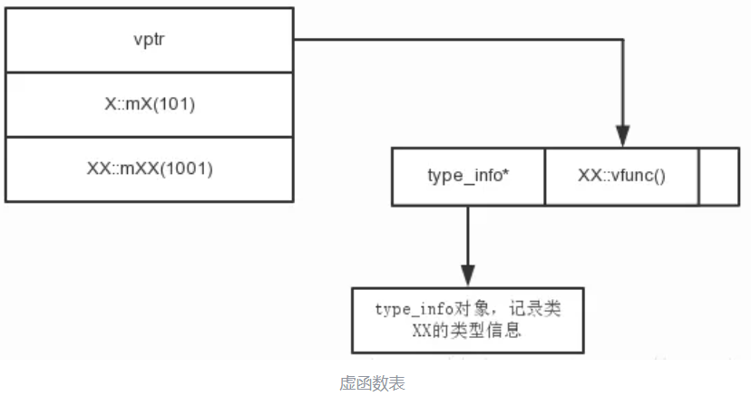
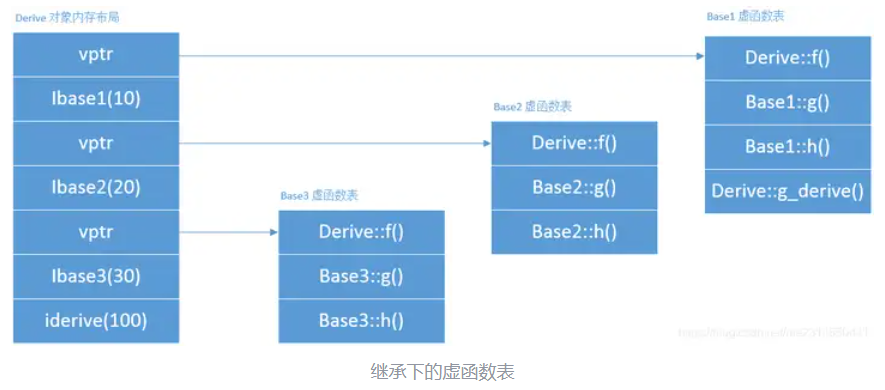

CONTENT OUTLINE
讨论和思考过的问题
〇 目录与说明
- CPP基础相关
- 系统与框架相关
额外说明：关于Qt的QA位于【Qt快速入门】
一 CPP基础相关
1 关于static与inline
非类的成员函数以及成员变量：
inline修饰的函数或变量（c++17开始可以修饰变量）在全局保留一份；static修饰的函数或者变量会在各自的编译单元都保留一份；static函数的局部static变量也会有多份，inline函数的static变量只有一份;static inline修饰的函数或者变量与static单独修饰的效果可能一致；inline不能修饰局部变量。inline来修饰函数还有内联的含义【老C++语法，基本已淘汰】，内联函数将会建议编译器把此函数处理成内联代码以提高性能【该建议是否被采纳，由编译器决定，现阶段的编译器都很智能，没必要去显式要求】
有关类的成员函数以及成员变量：
- 类的非const静态成员变量初始化，C++ 17可以通过
static inline在类内直接初始化，C++17之前必须在类外初始化（const static 修饰的变量也可以类内初始化，这个在之前也是可以的）； - C++17之后，类的静态成员变量在类内通过static声明，在类外（但是在头文件中）初始化时，如果不加inline的话可能会导致重定义从而出现链接错误，而加了inline 就不会出错，类似有无inline修饰的全局函数；
- C++ 17之前必须在
.cpp中初始化静态成员才不会出现重定义的错误【即类内定义静态变量，类外初始化】，在.h中初始化还是会导致重定义错误，因为C++17之前的标准不支持inline修饰类的静态成员变量； - 类中的函数其实可以认为是都隐式加了inline的，因为类中的所有函数在全局都只有一份，而有无static修饰只是限制该函数对类数据成员的使用【类的static函数只能使用static成员变量，类的普通成员函数可以使用所有的成员变量 】；
🔺C++ 17之前为什么类的非const静态成员必须类外初始化？
- 因为类的静态成员是类所有，不属于任何对象，如果放在类内初始化，那么每个对象构造的时候都会对该静态成员进行初始化，这样会导致其他对象在使用该静态成员时出现意想不到的错误，所以禁止类内初始化非const静态变量；
- 而const修饰的静态成员变量是在类中初始化，对象构造的时候不会再进行初始化操作，对象构造的时候默认该变量已经初始化了，反正也不能修改它；
- C++17之前的类内静态变量必须在类外初始化，如果有头文件和实现文件，最好在类的实现文件中对静态变量做初始化，如果在头文件中做初始化，也会引起重定义的问题；
- C++17 之后可以在类内通过static inline 直接进行声明与初始化，也可以在类内部进行声明，在类外（但是在头文件中）通过inline 进行初始化。其实就是新标准通过inline能够保证类内静态变量只初始化一次，全局共享一份数据，而之前的标准是不允许inline修饰类的静态成员变量的。
举例一：
main.cpp
1 |
|
test.h
1 | bool a = true; |
test2.h
1 |
编译结果：编译期出现的问题
严重性 代码 说明 项目 文件 行 禁止显示状态
错误 C2374 “a”: 重定义；多次初始化
举例二：将 test.h修改如下
1 |
|
编译一下：是链接期出现的问题
严重性 代码 说明 项目 文件 行 禁止显示状态
错误 LNK2005 “bool a” (?a@@3_NA) 已经在 test.obj 中定义
举例二：将 test.h修改如下
1 |
|
生成: 成功 1 个，失败 0 个，最新 0 个，跳过 0 个
这就是 inline 变量的一个使用场景了。当然，也可以将其定义放到.cpp文件中，同样可以避免第二阶段链接期的错误。
总结
📋关键字static：
① 修饰普通变量 ： 修改变量的存储区域和生命周期，使变量存储在静态区，在 main 函数运行前就分配了空间。如果有初始值就用初始值初始化它，如果没有初始值系统用默认值初始化它。
② 修饰普通函数：表明函数的作用范围，仅在定义该函数的文件内才能使用。在多人开发项目时，为了防止与他人命名空间里的函数重名，可以将函数定位为 static。
③ 修饰成员变量：修饰成员变量使所有的对象只保存一个该变量，而且不需要生成对象就可以访问该成员。
④ 修饰成员函数：修饰成员函数使得不需要生成对象就可以访问该函数，但是在 static 函数内不能访问非静态成员。
📋关键字inline
① 相当于把内联函数里面的内容写在调用内联函数处；
② 相当于不用执行进入函数的步骤，直接执行函数体；
③ 相当于宏，却比宏多了类型检查，真正具有函数特性；
④ 编译器一般不内联包含循环、递归、switch 等复杂操作的内联函数；
⑤ 在类声明中定义的函数，除了虚函数的其他函数都会自动隐式地当成内联函数。
📋组合static inline <函数>
🔺将C++函数声明为static inline的好处包括：
- 编译时展开：inline关键字会告诉编译器在调用函数时将其内容直接插入到调用处，而不是通过函数调用的方式执行。这样可以减少函数调用的开销，提高程序的执行效率。
- 避免重复定义：将函数声明为static inline可以避免在多个文件中包含同一函数定义而导致的重复定义错误。static关键字表示该函数只在当前文件中可见，避免了符号冲突。
- 减少代码大小：使用inline可以减少代码的大小，因为编译器会在每个调用点插入函数的代码，而不会生成单独的函数代码。
- 避免函数调用开销：由于函数被展开为代码，避免了函数调用的开销，特别是对于一些简单的、频繁调用的函数，可以提高程序的性能。
- 提高代码可读性：将函数声明为inline可以提高代码的可读性，因为函数的定义和调用点更加紧凑，更容易理解函数的作用。
需要注意的是：
- 将函数声明为
static inline并不是适用于所有情况的，特别是对于一些复杂的函数或者函数体较大的情况，可能不适合使用inline。 - 此外，编译器并不一定会将所有声明为inline的函数都进行内联展开，具体展开与否取决于编译器的优化策略。
2 指针与引用的区别
引用不占内存，不能改变引用索引线
在C++中，指针和引用都可以用来指向一个对象，但它们之间有以下主要区别：
- 指针是一个实体，而引用仅是一个别名。
- 重新赋值：
- 指针：可以改变指向，指向另外的变量。
- 引用：引用必须在声明时初始化，一旦初始化后，就不能改变引用的目标。
- 引用不能为空，指针可以为空。
- 指针：可以指向
nullptr或者无效地址。 - 引用：在定义时必须被初始化，且不可能引用到
nullptr。
- 指针：可以指向
- 内存占用：
- 引用的大小是和它指向的对象占用相同的内存。
- 指针的大小取决于机器的位数（在32位机器上是4字节，在64位机器上是8字节）。
- 语法不同：
- 指针：使用操作符
*来定义，->来访问成员。 - 引用：使用
&定义，访问方式与普通变量相同。
- 指针：使用操作符
- 间接访问：
- 指针：需要显示地使用解引用操作符（
*）来访问目标变量的值。 - 引用：直接操作，就如同操作普通变量一样。
- 指针：需要显示地使用解引用操作符（
- 引用自增（如++操作）影响的是引用对象本身，而指针自增（如++操作）影响的是指针指向的地址。
- 有多级指针，但只有一级引用（例如int **是指向int *的指针，int &&是不允许的）。
- 如果返回动态内存分配的对象或者内存，必须使用指针，引用可能引起内存泄漏。
3 关于多态和虚函数
3.1 多态是怎么实现的？
C++中的多态性是面向对象编程的重要特性之一，使得一个函数或对象可以具有不同的行为。多态性允许我们用相同的接口来调用不同类型的对象。
C++支持两种多态性：
- 编译时多态性（静态多态性）：通过函数重载和模板实现。
- 函数重载是指在同一个作用域内，名称相同、但函数参数类型或参数个数不同，从而可以根据调用时提供的实参来确定实际调用的函数。
- 模板多态是指编译时进行代码生成，根据传递的模板参数不同，生成不同的代码。
- 隐藏是指在子类中定义父类同名同参数函数。
- 运行时多态性（动态多态性）：通过继承和虚函数实现。
3.1.1 静态多态实现原理
静态多态都是通过name mangling实现的。这是一种编译器技术，用于为程序中的变量和函数生成唯一的内部名称，这个过程涉及改变原始名称的形式，从而避免了变量和函数之间名称的冲突。name mangling规则的具体实现方式因编译器而不同，下面是一些常见编译器的name mangling规则：
- MSVC编译器：在函数名前加上下划线，然后加上函数名，以及加上所有参数的数据类型与长度信息，最终生成修饰过的函数名。
- 例如，函数名
foo(int, float)会被修饰为_foo@8。其中8是函数参数的总长度，指示了函数的参数类型。
- 例如，函数名
- G++编译器：以函数名和参数类型组成的字符串作为函数的新名字。
- 例如，函数名
foo(int, float)会被编译器重命名为_Z3fooif，其中Z表示这是一个C++函数，3表示该函数名长度为3，f和i分别表示两个参数的数据类型为float和int。
- 例如，函数名
- Clang编译器：类似于GCC，使用函数名和参数类型生成一个字符串作为新的函数名，不过字符串的格式可能略有不同。
编译前，不同命名空间内的同名函数、同名但参数不同的函数，经过name mangling处理，都有唯一名称，从而能够被区分。
3.1.2 动态多态的概念及实现原理
在父类中定义一个虚函数，在子类中重写这个虚函数。在程序运行时，通过基类指针或引用指向子类对象，并使用基类对象调用虚函数时，会自动调用子类的重写版本。
运行时多态性，允许我们通过基类指针或引用来调用派生类的对象，从而使用派生类函数。这是通过虚函数和虚函数表【Virtual Table, vtable】实现的。
- 虚函数是使用关键字
virtual声明的成员函数，基类的虚函数可以在派生类中被重写。 - C++编译器为每一个有虚函数的类生成一个虚函数表，虚函数表是一个指向各个虚函数的函数指针数组。
- 类实例化成对象后，对象首地址处存放有一个指针
vptr指向虚函数表。 - 编译器创建的虚函数表，用于在运行时解析函数调用。
- 虚函数重写，重写的是虚函数表里的地址。

类继承的情况下，每个子类以及当前类都会有一个虚函数表。每个子类的虚函数表，会存储子类和父类所有的虚函数地址，如果子类与父类有同名虚函数，则只填子类中的同名虚函数地址。

当程序运行时，基类指针或引用调用虚函数，会根据对象的实际类型（即运行时类型），选择一个虚函数表，并在虚函数表中查找对应的函数指针，然后调用指向的具体实现代码。
具体是 通过虚函数的声明顺序来在虚函数表中找。
3.2 多态性的优缺点
优点:
- 灵活性：可以在运行时决定调用哪个类的函数，提高代码的灵活性和可扩展性。
- 可扩展性：可以轻松添加新的派生类，而无需修改现有代码。
- 代码复用：基类定义的接口可以被派生类重用，从而减少代码重复。
缺点:
- 性能开销：每次虚函数调用都有一次额外的间接调用，可能会影响性能。
- 调试复杂性：多态性增加了代码的复杂性，调试时可能更困难。
二 系统与框架相关
1 进程与线程通
1.1 进程通信方式
线程通信方式：全局变量【原子操作 c++如何实现？ 自旋锁？CPU如何实现原子操作？缓存锁的条件 cas无锁操作，需要硬件支持，通过 读写锁】
成员变量 、信号、…、临界区 比互斥体的效率高 互斥体和互斥量的区别？ 互斥体的实现？ 临界区怎么实现？
window MFC的消息机制 每个窗口都有自己自己的消息循环，然后进行剥离， 消息映射表
qt的信号和操
qt的线程和C++线程：qt内部有专属的